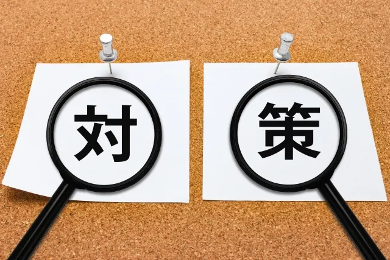

エース社員が辞める兆候と5つの理由｜組織崩壊を防ぐ対策を徹底解説

「エース社員が辞めると、組織が崩壊する」これは決して大袈裟な話ではありません。
エース社員に業務やノウハウが集中している組織ほど、その一本柱が抜けた時のダメージは計り知れないものになります。
「最近、コミュニケーションが減った気がする」
「以前のような熱量を感じられない」
もし、あなたの部下であるエース社員にこのような変化が見られるなら、それは退職のカウントダウンが始まっている危険なサインかもしれません。
優秀な社員ほど、見切りをつけるのは合理的でスピーディーです。
そこで本記事では、手遅れになる前に気づきたい「エース社員が辞める前の兆候」と「本質的な退職理由」を解説します。
この記事でわかること
- エース社員が辞める前の危険な兆候
- エース社員が辞める5つの本当の理由
- エース社員の退職が招く組織崩壊のリスク
- エース社員の離職を未然に防ぐ対策
- エース社員に退職を告げられた時の対応策
- エース社員退職後の組織の立て直し方
企業の人事担当として300人以上の採用に関わってきた筆者が、実体験をもとにアドバイスします。
エース社員が辞める前の危険な兆候
エース社員の退職は、ある日突然起こるように見えて、実は水面下で進行しているものです。
多くの場合、決断に至るまでにいくつかの小さな「予兆」サインを発しています。
しかし、優秀な社員ほど不満を周囲に漏らさず、合理的に次のステップへの準備を進めるため、上司が気づいた時には手遅れになっているケースが少なくありません。
ここでは、管理職として絶対に見逃してはいけないエース社員の行動変化について、具体的に解説します。
- 「やる気がない」ように見える態度の変化
- 会議での発言が減り、改善提案がなくなる
- 周囲との会話が少なくなる
- 急な有休取得や残業の減少
- 会社の将来やキャリアの話をしなくなる
一つずつ見ていきましょう。
「やる気がない」ように見える態度の変化
これまで仕事に対して情熱的だったエース社員が、急に淡々と業務をこなすようになったら要注意です。
これは「静かな退職」と呼ばれる状態に近く、退職を決意した社員によく見られる防衛本能の一つといえます。
退職を決めた社員にとって、現在の職場での評価はもはや重要ではありません。
そのため、必要以上のエネルギーを使わず、最低限のタスクだけをこなそうとする心理が働きます。
以前なら前のめりになって取り組んでいた難題に対しても、「わかりました」と事務的に受け入れるだけになったり、成果へのこだわりが薄れたりしていないでしょうか。
不満や怒りを露わにせず、むしろ感情が見えなくなる「無関心」の状態こそが、心の離脱を示唆する最も危険なサインなのです。
会議での発言が減り、改善提案がなくなる
会議で積極的に意見を出していたのに、急に聞き役に徹するようになるのも危険なサインです。
「会社を良くしたい」という意欲が失われ、「どうせ辞めるから関係ない」という心理が働いていると考えられます。
エース社員は本来、現状に満足せず常により良い方法を模索する性質を持っています。
それにもかかわらず、問題点に対して指摘をしなくなったり、新しいプロジェクトへの関心を示さなくなったりするのは「何をしても無駄だ」という諦めを感じているか、既に見切りをつけている状態でしょう。
 まつお
まつお「文句を言わなくなったから納得している」と安心するのは禁物です。
優秀な人材にとって、沈黙は肯定ではなく「無関心」の表れであることを理解しておく必要があります。
周囲との会話が少なくなる
以前はランチや飲み会に参加していたのに、付き合いが悪くなったり、雑談に応じなくなったりするのも退職の前兆です。
これには、「退職することへの後ろめたさ」や「退職を悟られないための防衛本能」が関係しています。
また、すでに転職先や新しい目標に意識が向いているため、現在の同僚との関係構築に対する優先順位が下がっているケースも多いです。
社内チャットなどの返信が極端に事務的になる、笑顔が減るといった非言語的な変化も見逃せません。
彼らは周囲に波風を立てずに去りたいと考えているため、退職を伝えるその瞬間まで、誰にも相談せずひっそりと準備を進めていることが多いのです。
急な有休取得や残業の減少
勤怠状況の変化は、退職のサインの中でも特に具体的で、見過ごせません。
これまで仕事熱心で残業も厭わなかったエース社員が、急に定時で退社するようになったり、「私用」を理由に休暇の申請が増えたりした場合、転職活動をしている可能性が考えられます。
もちろん、ワークライフバランスを見直した結果かもしれません。
しかし、他の兆候と合わせてこうした行動が見られる場合、転職活動に時間を使っていると考えるのが自然です。
特に、これまで多忙を理由に消化しきれなかった有給休暇を計画的に使い始めたら、次のステップに向けた準備が始まった合図と見ても良いでしょう。
会社の将来やキャリアの話をしなくなる
面談の場合などで、今後の目標やキャリアプランについて話したがらなくなるのも、決定的な兆候の一つです。
「来期はどうしたい？」「数年後はどんなポジションを目指す？」といった問いかけに対し、答えを濁したり、曖昧な返答に終始したりしていないでしょうか。
既に退職を決めている社員にとって、その会社に自分の未来は存在しません。
実現するつもりのない目標を語ることは嘘をつくことになり、誠実な社員ほど苦痛を感じます。そのため、未来の話を避けて、業務報告などの事務的な会話に逃げようとするのです。
キャリアの話を振った時に、視線を逸らしたり話題を変えようとしたりする場合は、既に心が会社から離れている可能性が高いと判断し、早急に対話の機会を持つべきでしょう。
エース社員が辞める5つの本当の理由
退職理由を聞かれた際、多くの社員は「一身上の都合」や当たり障りのない理由を伝えます。
しかし、エース社員が会社を去る決断を下す背景には、もっと深く、切実な問題が潜んでいるものです。
特に優秀な人材ほど、待遇への不満だけでなく「自分の未来」や「組織のあり方」に対して敏感です。
彼らが会社に見切りをつける主な理由は、以下の5つに集約されます。
- 業務過多による燃え尽き症候群
- 貢献度に見合わない評価と待遇
- 社内での成長機会やキャリアの限界
- 管理職のマネジメントへの失望
- 会社の将来性やビジョンへの不安
順番に解説していきます。
業務過多による燃え尽き症候群
「仕事ができる人に仕事が集まる」というのは組織の常ですが、これが行き過ぎるとエース社員を精神的に追い詰めるケースがあります。
「パレートの法則（2：8の法則）」のように、組織の成果の8割を優秀な2割の社員が支えている状況は、裏を返せばその2割に過重な負荷がかかっているということです。
まつおエース社員は責任感が強く、多少の無理なら引き受けてしまう傾向があります。
しかし、終わりの見えない長時間労働や、他人のミスをカバーし続ける日々に「なぜ自分だけがこんなに働かなければならないのか」という不公平感が蓄積していくのです。
真面目なエースほど、ある日突然、糸が切れたように意欲を失う「バーンアウト（燃え尽き症候群）」に陥りやすくなります。
貢献度に見合わない評価と待遇
エース社員は、自分の働きが生み出す価値や、社外での市場価値を客観的に理解しています。
そのため、評価や待遇に正しく反映されていないと感じた時、強い不満を抱くのです。
特に、年功序列の文化が根強い組織では、成果を出しても給与が上がらず、責任だけが重くなるケースは少なくありません。
これは給与面の不満だけでなく「正当に認められていない」という承認欲求が満たされないことへの失望にも繋がります。
「頑張っても報われない」という感情は、エース社員のモチベーションを奪い、より自分を高く評価してくれる会社を探すきっかけになるのです。
社内での成長機会やキャリアの限界
成長意欲が極めて高いのも、エース社員の大きな特徴です。
彼らは常に新しいスキルや知識を求めており、「この会社にいても、これ以上成長できない」と感じた瞬間に、転職を視野に入れ始めます。
入社数年で業務を一通りマスターし、ルーチンワークを回すだけの日々が続くと、エース社員はスキルアップの限界を感じ始めるのです。
さらに、社内に自分が目指すべき上司や先輩がいない場合、その焦燥感はより強まるでしょう。
優秀な人材を留めるには、常に新しい課題や成長のステージを用意し続ける必要があります。
管理職のマネジメントへの失望
「人は会社ではなく、上司を辞める」という言葉があるように、直属の上司に対する失望も大きな離職理由です。
特にエース社員は、上司の能力や判断力をシビアに観察しています。
例えば、的確なフィードバックをせずに結果だけを求めたり、部下を信頼せずマイクロマネジメントに走ったりする上司に対し、強いストレスを感じるのです。
上司としての力量不足を感じると「この人の下では働きたくない」と見切りをつけます。
また、相談しても「君なら大丈夫だ」と精神論で返されたり、改善提案が握り潰されたりすることも信頼関係を損なう原因です。
尊敬できない上司の下で働くことは、エース社員にとって苦痛でしかありません。
会社の将来性やビジョンへの不安
エース社員は当事者意識が高く、いちプレイヤーとしてだけでなく、経営的な視点を持っている場合が多いです。
そのため、自社が業界内でどのような立ち位置にあり、今後どう成長していくのかを冷静に見ています。
会社の進むべき方向性が見えなかったり、経営陣が掲げるビジョンに共感できなかったりすると「この船に乗り続けても大丈夫だろうか」という不安が生まれるのです。
自分の仕事が会社の成長や社会にどう貢献しているのか、その繋がりが見えなくなった時、働く意味そのものを見失ってしまいます。
魅力的なビジョンを共有し、未来への期待感を持たせられなければ、エース社員の心を組織に繋ぎとめておくことは難しいでしょう。
エース社員の退職が招く組織崩壊のリスク
エース社員一人の退職は、単なる「欠員の発生」ではありません。
それは、組織を支えていた大黒柱が突然引き抜かれるようなもので、残された組織全体がバランスを崩し、倒壊する危険性をはらんでいます。
特に中小規模の組織や特定の個人に依存したチームにおいて、その影響は甚大です。
「代わりの人を雇えばいい」と安易に考えていると、現場の混乱を収拾できず、最悪の場合は事業停止や部門解体にまで追い込まれるケースさえあります。
エース社員の離職が引き金となって起こる、具体的な5つのリスクを見ていきましょう。
- 依存していたノウハウが消失する
- 残された社員の業務負担が増える
- チーム全体の生産性が低下する
- 社内の士気が下がり連鎖退職が続く
- 顧客からの信頼を失う
それぞれ、詳しく解説します。
依存していたノウハウが消失する
エース社員の退職における最も大きな損失は、その人の頭の中にしか存在しないノウハウが、会社から失われてしまうことです。
例えば、長年の経験で培われた顧客との関係構築や、マニュアル化できない技術など、組織の競争力の源泉となっていた貴重な知的資産が流出してしまいます。
まつお特に、業務の属人化が進んでいる組織ほど、このダメージは計り知れません。
「あの件は◯◯さんしか分からない」という状況が常態化していると、その人がいなくなった瞬間に業務が完全にストップしてしまう可能性があります。
こうしたノウハウが継承されずに消えることは、企業の競争力を削ぐ大きな損失になりかねません。
残された社員の業務負担が増える
エース社員は、一般社員の2〜3人分の業務量をこなしているケースも少なくありません。
抜けた穴を埋めるために、残されたメンバーには物理的にも精神的にも負担がのしかかります。
さらに、エースが担っていたのは難易度の高い仕事や、トラブルの解決といった負荷がかかる業務であることが多いのです。
こうした業務をスキル不足のメンバーが引き継ぐと、何倍もの時間がかかるでしょう。
その結果、現場は長時間労働や休日出勤が常態化し、疲弊していきます。
チーム全体の生産性が低下する
エース社員は、個人の成果が高いだけでなく、チーム全体の潤滑油として機能している場合がほとんどです。
彼らがいなくなることで、チーム内の連携がうまくいかなくなり、これまでスムーズに進んでいた業務も停滞し始めます。
その結果、チーム全体の生産性が低下してしまうのです。
例えば、エース社員が抜けたことで、プロジェクトを完了させるまでの時間が以前の倍以上かかるようになったり、業務の品質が落ちてしまったりします。
残されたメンバーの業務負担増による疲弊も相まって、チームのパフォーマンスはみるみるうちに悪化するのです。
この生産性の低下は、企業の売上や業績に直接的なダメージを与えることになります。
なお、「たった一人の退職が、なぜ組織全体の崩壊を招くのか？その恐ろしいメカニズムについては、こちらの記事で詳しく解説しています（内部リンク）」
社内の士気が下がり連鎖退職が続く
エース社員の退職は、残された社員に心理的なショックを与え、「連鎖退職（退職ドミノ）」の引き金となるリスクがあります。
「あの優秀な〇〇さんが辞めるなら、この会社はもうダメかもしれない」という不安や「あの人が辞めるなら自分も」という気持ちが伝染するのです。
特に、エース社員が職場における精神的支柱やリーダー的な存在であった場合、その影響は大きくなります。
彼らは現場の不満を吸収する防波堤の役割を果たしていた可能性があり、その防波堤が決壊することで、隠れていた不満が一気に噴出する恐れもあるでしょう。
優秀な人材ほど危機察知能力が高いため、エースの退職を皮切りに、次に優秀な層から順に辞めていくという最悪のパターンになることも珍しくありません。
こうなると、組織の崩壊を止めるのは極めて困難です。
顧客からの信頼を失う
エース社員の退職によるダメージは、社内だけに留まりません。
顧客や取引先との信頼関係にも深刻な亀裂が入る恐れがあります。
ビジネスの現場では、会社ではなく、担当者への信頼で契約が続いているケースが多いです。
「〇〇さんが担当してくれるから発注している」という顧客に対し、後任者が十分なパフォーマンスを発揮できなければ、最悪の場合は、契約解除や取引停止につながります。
さらに、エース社員が競合他社に転職した場合、信頼していた顧客ごと持っていかれるケースも少なくありません。
長年築き上げたブランドや信用の失墜は、売上の数字以上に企業の存続を脅かす事態に発展しかねません。
エース社員の離職を未然に防ぐ対策

「辞めます」と退職届を出されてから慌てて引き止めても、成功率は低いのが現実です。
エース社員の心をつなぎ止めるためには、彼らが不満や限界を感じる前に、先回りして手を打つ「予防的メンテナンス」が欠かせません。
重要なのは、普段の小さなサインを見逃さず、働き続けたいと思える環境を整えていくことです。
ここでは、手遅れになる前に、組織として打つべき具体的な5つの対策を紹介します。
- 1on1を実施し本音を引き出す
- 納得感のある人事評価制度の再構築
- 特別休暇やリフレッシュの推奨
- 業務の効率化による負担軽減
- 挑戦できる機会と裁量を与える
詳しく見ていきましょう。
1on1を実施し本音を引き出す
エース社員とは、業務連絡以外の会話が希薄になりがちです。
そこで、上司と部下が1対1で対話する「1on1ミーティング」を定期的に実施し、本音を引き出す場を設けましょう。
まつおここでのポイントは、進捗確認などの「管理」を目的にしないことです。
「最近、困っていることはないか」「今後どのようなキャリアを築きたいか」といった、部下のための時間に徹してください。
上司が聴く姿勢を見せることで、心理的安全性が高まり、待遇やキャリアへの不安といった本音を口にしやすくなります。
こうした対話を通じて信頼関係を築くことが、離職の兆候をいち早く察知し、対策を打つための基本となるのです。
納得感のある人事評価制度の再構築
エース社員が最も嫌うのは「不公平」です。
どれだけ成果を上げても、年功序列や不透明な基準で評価されてはモチベーションが続きません。
貢献度に見合った、公平で納得感のある評価制度を再構築する必要があります。
具体的には、成果に対するインセンティブを明確にするだけでなく、プロセスや行動特性を評価する仕組みを取り入れるのも有効です。
また「なぜその評価になったのか」というフィードバックを丁寧に行い、評価への納得度を高めることも欠かせません。
金銭的な報酬はもちろん重要ですが「会社は自分の価値を正しく理解してくれている」という承認欲求を満たすことが、離職防止に繋がります。
特別休暇やリフレッシュの推奨
責任感の強いエース社員ほど、自分から「休みます」と言い出しにくい傾向があります。
気づかないうちに疲労を蓄積させているケースも少なくありません。
そのため、会社側から強制的に休ませる仕組みを作りましょう。
例えば「リフレッシュ休暇」や「記念日休暇」などを制度化すると効果的です。
さらに、上司が率先して有休を取得するなど「休むことは悪ではない」という組織文化を作ると、罪悪感なく休みやすくなります。
エース社員に長く活躍してもらうためには、戦略的な休息が不可欠です。
業務の効率化による負担軽減
エース社員一人に業務が集中してしまう構造は、組織にとって極めて大きなリスクです。
この「エース依存」の状態を解消するためには、業務プロセスそのものを見直し、特定個人のスキルに頼らない仕組みを構築する必要があります。
抱えている業務を棚卸しし、エース社員でなくてもできる仕事は他のメンバーへ移譲するか、DX化やアウトソーシングで業務量を減らす努力が必要です。
「あなたにしかできない仕事」に集中してもらうために、それ以外の業務負担を減らしてあげましょう。
エース社員が付加価値の高い仕事に専念できる環境を整えれば、長時間労働も解消され、仕事への満足度も向上します。
挑戦できる機会と裁量を与える
成長意欲の高いエース社員にとって、最も強力な離職防止となるのが「挑戦の機会」です。
新しいプロジェクトのリーダーに抜擢したり、権限を委譲して自分の裁量で動ける範囲を広げたりすることが、仕事へのやりがいを刺激します。
「任せる」という行為は、最大の信頼の証です。
もちろん失敗のリスクはありますが、それを許容し、背中を押してくれる組織に対して、優秀な人材は愛着を感じます。
枠にはめ込まず、可能性を信じてハンドルを握らせることが、エース社員の更なる成長と定着につながるのです。
エース社員に退職を告げられた時の対応策
もし、信頼していたエース社員から「お話があります」と退職を切り出されたら、動揺するのは当然です。
しかし、そこでの第一声や態度は、その後の交渉結果だけでなく、退職までの期間のパフォーマンスや、残されたメンバーへの影響までも左右します。
感情に任せて焦って引き止めたり、逆に冷たく突き放したりするのはよくありません。
ここでは、エース社員との信頼関係を損なわず、最善の結果を導き出すための初期対応における3つの鉄則を解説します。
- 「引き止め前提」で理由を聞かない
- 退職理由を「深掘りしすぎない」
- その場で決断しない
順番に解説していきます。
「引き止め前提」で理由を聞かない
退職を告げられた瞬間、思わず「君がいないと困る」「なんとか残ってくれないか」といった言葉が口から出てしまいそうになるかもしれません。
しかし、その一言が、対話の扉を閉ざしてしまう可能性があります。
退職を切り出す側は、相当な覚悟と勇気をもってその場に臨んでいます。
そこでいきなり引き止められると、本人は「罪悪感」を抱き、本音を話しにくくなってしまうのです。
冷静に「そうか、大事な話をしてくれてありがとう」と、相手の決意を受け止める姿勢を見せましょう。
まつお引き止めは、あくまで選択肢のhとつです。
「まずは君の考えをじっくり聞かせてほしい」というスタンスで対話を始めることが、円満な着地点を見つけるための第一歩になります。
退職理由を「深掘りしすぎない」
退職理由を聞く際「なぜ辞めるの？」「何が不満だったの？」と畳み掛けるのは避けましょう。
これでは対話ではなく「尋問」になってしまい、相手を萎縮させるだけです。
優秀な社員ほど波風を立てずに去るために、「一身上の都合」や「家庭の事情」といった建前を用意しています。
無理に本音を暴こうとせず「何かきっかけになった出来事はあった？」「もし今の環境で変えられることがあれば教えてほしい」といった、柔らかい問いかけを心がけてください。
これなら相手も責められていると感じず、組織への改善要望として本音を話しやすくなります。
仮に本音が聞けなかったとしても、無理に追求せず信頼関係を維持したまま送り出すほうが、将来的なメリットは大きいでしょう。
その場で決断しない
エース社員を失うことへの焦りから、その場で「仕方ないな」と安易に了承したり、「給与を上げるから残ってくれ」と条件交渉を始めたりするのは避けるべきです。
エース社員の退職は影響範囲が大きいため、社内への影響、本人の将来、チームの状況などを整理して判断する必要があります。
仮に引き止めるなら「どんな条件（待遇、役割変更など）なら残る可能性があるか」を検討しなければなりません。
逆に、退職を受け入れるなら「後任はどうするか」「引き継ぎ期間は十分か」を冷静にシミュレーションする必要があります。
「気持ちは受け取った。重要なことだから、会社としてどう対応できるか整理するために少し時間をくれないか」と伝え、一旦回答を持ち帰りましょう。
後日改めて時間を確保して話すことで、お互いに冷静な状態で建設的な議論ができるようになります。
エース社員退職後の組織の立て直し方
エース社員の退職は、組織にとって大きな痛手であることは間違いありません。
しかし、見方を変えれば、これは特定の個人への依存から脱却し、より強くしなやかなチームへと生まれ変わるための絶好の機会でもあります。
ただし、ここでの対応を間違えると、現場の混乱が続き、連鎖退職による「組織崩壊」へと突き進んでしまいかねません。
ここでは、エース社員が去った後の組織を、崩壊させずに立て直すための5つのポイントを解説します。
- チームの感情ケアを最優先する
- エースの仕事を一人で背負わせない構造にする
- 「代わりのエース」を育てるのではなく、仕組みで補う
- チームの成長機会を意図的に増やす
- 関係者との関係をポジティブにクローズする
詳しく見ていきましょう。
チームの感情ケアを最優先する
エース社員の退職が決まった直後、最もケアすべきなのは「残されたメンバーの不安」です。
「情報がない状態」は人の不安を増幅させ、根拠のない噂や憶測を生む原因となります。
まず、退職が決まってから遅くとも3日以内にはチーム全体へ経緯を説明しましょう。
その際、「業務のしわ寄せが来るのではないか」という懸念を払拭するために「特定の人の業務量は増やさない」「まずはチーム全体で調整する」といった安心材料となる言葉を明確に伝えてください。
さらに、たった10分でも良いのでメンバー全員と個別に1on1を実施しましょう。
個々の不安な気持ちを丁寧にヒアリングすることが、その後の組織運営を左右します。
エースの仕事を一人で背負わせない構造にする
エース退職後に組織が崩壊する典型的なパターンは、残されたメンバーの誰かが、エースの仕事を丸ごと引き継がされ、プレッシャーで潰れてしまうことです。
これを避けるためには「仕事の再配分」ではなく「業務の再構造化」という視点を持つ必要があります。
まずは、エースが担っていた業務を大きく3〜5つの役割やタスクの柱に分解しましょう。
そして、その一つの柱を特定の誰かではなく、複数人でシェアする体制を構築します。
同時に、判断業務なども一人に集中させず権限を分散させることで、業務の属人化を防ぐことが可能です。
これは、エース不在という危機を、チーム全体の業務理解度を深めるチャンスに変えるためのきっかけになります。
「代わりのエース」を育てるのではなく、仕組みで補う
多くの場合、エース社員が退職した後に「早く次のエースを育てなければ」となりがちです。
しかし、そもそもエース社員のような高い能力と自律性を兼ね備えた人材は稀であり、その再現性は極めて低いものです。
仮に育ったとしても、また属人化への逆戻りになってしまいます。
まつお目指すべきは、「スター選手がいなくても80点が取れる仕組み」への転換です。
そのためには、業務フローの標準化や、情報共有のテンプレートを用意するなど、誰でも一定の品質が出せるようにします。
また、個人のKPI達成を追求するのではなく、チーム全体の目標達成を評価する仕組みに変えることで、自然と協力し合う文化が根付いていきます。
エース個人の「神業」に頼るのではなく、誰でも再現可能な「仕組み」で組織を動かすことが重要です。
チームの成長機会を意図的に増やす
カリスマ的なエース社員がいなくなると、残されたメンバーは「自分たちだけでやっていけるのか」と自信を喪失し、萎縮してしまう傾向があります。
この状態が長く続くと組織は本当に弱体化してしまうため、意図的に「成長機会」を作り出すことが重要です。
エースがやっていた役割を細分化してメンバーに任せ「自分たちでもできた」という小さな成功体験を積み重ねさせましょう。
この時、管理職からのフィードバックは「ポジティブ8割」を意識し、挑戦した姿勢を賞賛することが大切です。
「エースがいないと無理」という無力感を「自分たちでなんとかする」という当事者意識に変えることができれば、チームの結束力と個々のスキルは以前よりも確実に向上します。
関係者との関係をポジティブにクローズする
退職者が出た際、最もやってはいけないのが「裏切り者扱い」や「陰口」です。
「辞めるとあんなふうに言われるのか」と、会社への不信感が募ります。
逆に、退職者を「卒業生」として温かく送り出しましょう。
これは退職者のためだけでなく、残る社員に「この会社は人を大切にする」という安心感を与えるために不可欠です。
「新しい場所でも頑張って」とポジティブに送り出せば、円満な関係維持だけでなく、将来的な「アルムナイ採用」やビジネスパートナーとしての再会にもつながります。
最後まで誠実な対応を貫くことが、組織の品格を守り、崩壊を防ぐ最後の砦となるのです。
エース社員に依存せず、チームで成果を出す組織へ
エース社員の退職は、管理職にとって悪夢のような出来事かもしれません。
しかし、適切なマネジメントと事前の対策を講じることで、そのリスクは大幅に減らせます。
また、万が一エースが去ることになっても、それをきっかけに「特定の個人に依存しない組織」へと脱皮できれば、会社としてはむしろ強くなれるチャンスです。
そのためには、個人のカリスマ性に頼るのではなく「誰かが欠けても成果が出せる仕組み」の構築が欠かせません。
日頃の対話で部下の小さな変化をキャッチしつつ、業務の標準化や権限委譲を少しずつ進めていきましょう。
エース社員も、それ以外のメンバーも、全員が安心してパフォーマンスを発揮できる「持続可能な強いチーム」作りを、ぜひ今日から始めてみてください。
採用・人事やAI活用のご相談を受け付けています
AI研修、AI導入支援、採用支援、記事の執筆など、まずはお気軽にご相談ください。
ご相談はこちら